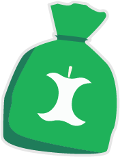

Madaffald
Madaffald er affaldet, der kommer direkte fra madlavning. Madaffald er dog ikke den gamle grøn affald.

Når du sorterer madaaffald bidrager du med, at vi bruger færre nye ressourcer.
Husk madaffald skal i poser.
Husk at binde en knude på posen.
MANGLER DU POSER?
Odense Renovation udleverer de grønne poser. Er du ved at løbe tør for madaffaldsposer, så binder du en pose på håndtaget af beholderen til restaffald og madaffald, så lægger skraldemanden nye poser oven på beholderen efter næste tømning.
Bor du til leje, hvor der er fællesbeholdere, skal du kontakte din vicevært.
Få mere at vide ved at trykke på produkterne.
Hvis du er i tvivl
Odense Renovation har lavet en sorteringsguide , hvor du kan finde ud af, hvordan du skal sortere forskellige mad- og fødevarer. Du kan finde Odense Renovations sorteringsguide her: https://www.odenserenovation.dk/sorteringsguide/
Mad Affald
Mad Affald er affaldet der kommer direkte fra madlavning. Mad affald er dog ikke den gamle grøn affald!
Når du sorterer madaaffald bidrager du med, at vi bruger færre nye ressourcer.
Hvordan
Mad & Restaffald skal i poser i beholderen, husk at binde knude på posen! Bind en pose på din beholder, når du får brug for nye poser. Bor du til leje skal du kontakte viceværten.